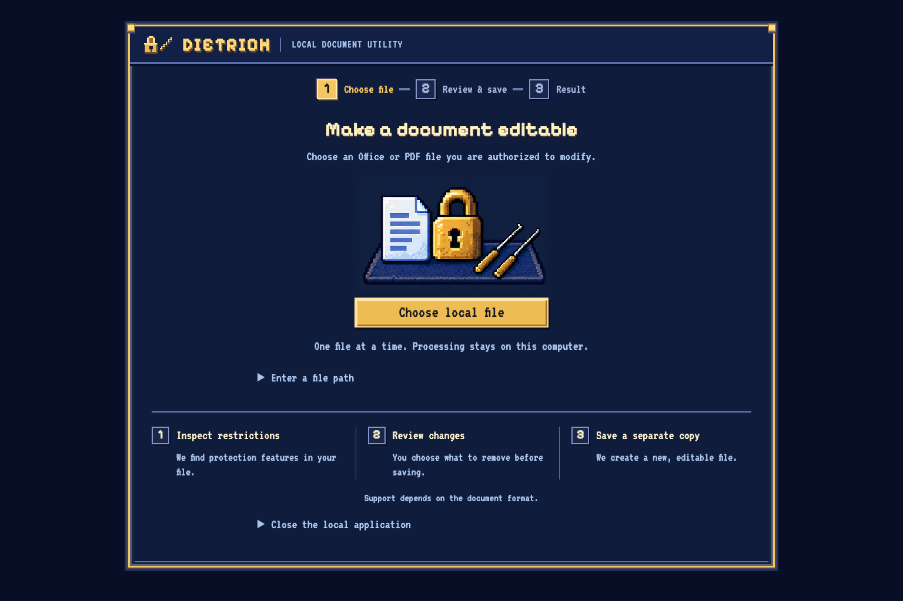
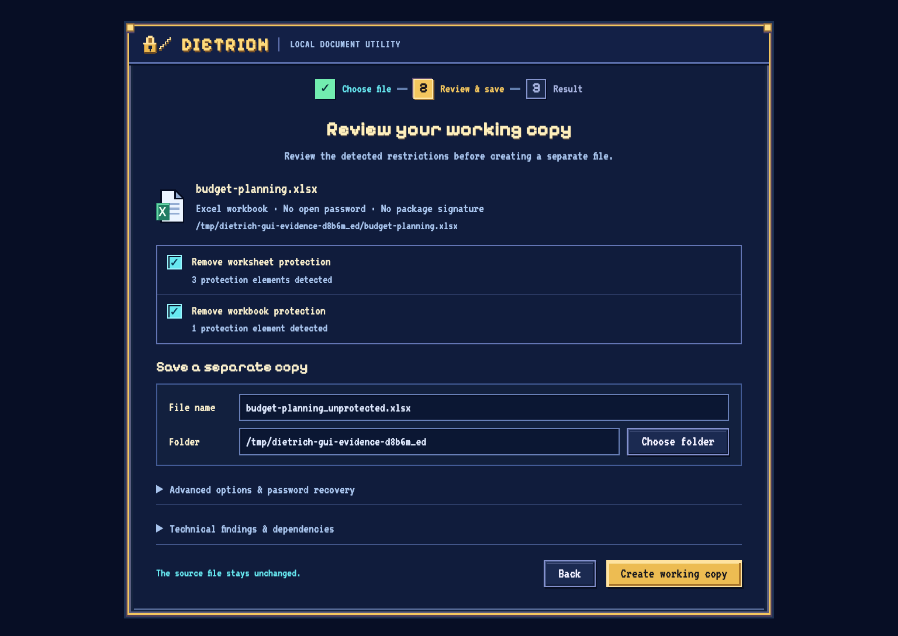
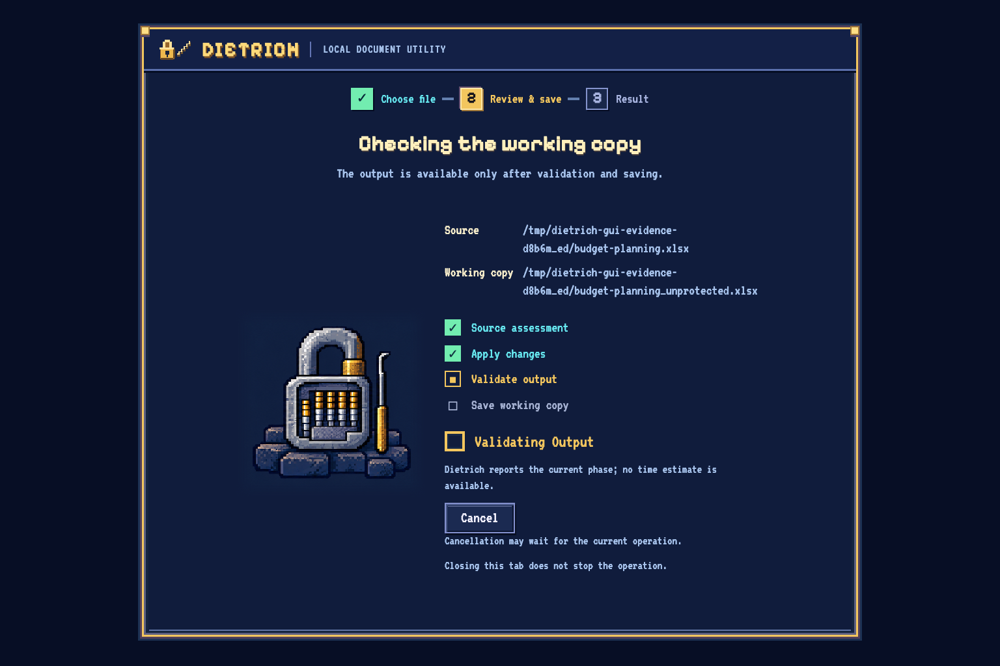
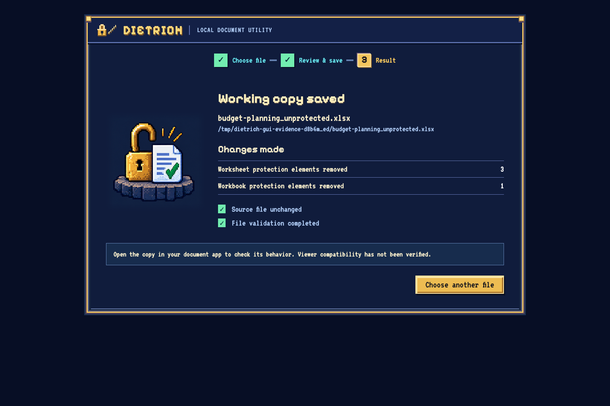
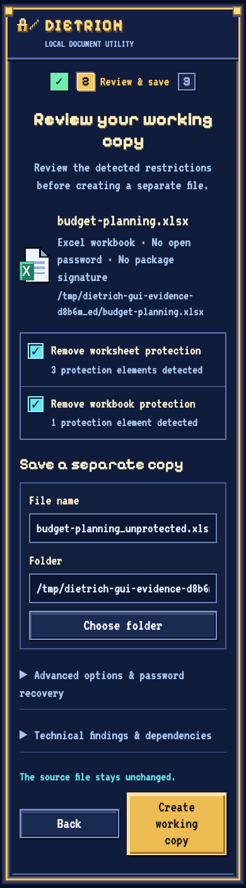

Document
local path · never uploaded
fixtures/board_report.xlsx
XLSX
Idle
Ready to inspect
Choose a sanitized fixture from the tray, then run the simulated inspection.
Working copy
original preserved · written side-by-side
fixtures/board_report_unprotected.xlsx
Advanced password · wordlist · mask · signatures · hashcat
Nothing here leaves the page or invokes Dietrich. These controls mirror the real CLI flags.
Ledger
Ready- Demo ready · fixture data only · no commands run
Screenshot tour
the real dietrich-gui · not this simulation
Field captures of the bundled dietrich-gui desktop interface working on a
synthetic workbook with three worksheet locks and one workbook lock. The bench above is a
separate, fixture-only simulation; these images run no commands and change nothing.
-

Choose a filePick a local Office or PDF document. Nothing is uploaded. -

Review restrictionsChoose what to remove and where the copy is saved. -

Validate and saveThe copy is reopened and checked before it is published. -

Read the resultRemoval counts, warnings, and the saved path. The source stays unchanged. -

The same bench, narrow At a phone width the review and save flow stacks: full paths wrap, destination controls drop below the form, and every control keeps a visible label and focus ring.